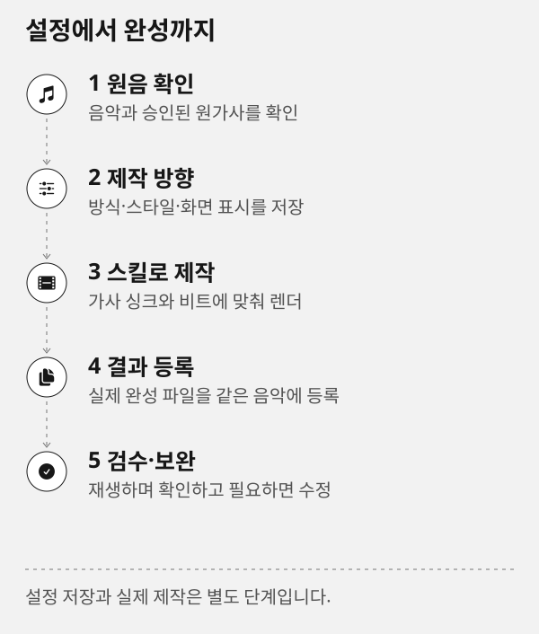

제작 기록과 성능 대시보드
이 페이지의 기능과 다음 단계를 확인한 뒤 제작실에서 작업하세요.
이 문서 목차
제작 기록은 음악과 모션그래픽 작업에서 사용자가 요청한 프롬프트, 실제 작업 시간, 결과 요약과 생성 파일을 프로젝트별로 정리하는 기능입니다. 이 안내는 제작을 시작하거나 파일을 삭제하지 않습니다.
- 원음 확인
음악과 승인된 원가사를 확인합니다.
- 제작 방향
방식·스타일·화면 표시를 저장합니다.
- 스킬로 제작
가사 싱크와 비트에 맞춰 렌더합니다.
- 결과 등록
실제 완성 파일을 같은 음악에 모읍니다.
- 검수·보완
재생하며 확인하고 필요하면 수정합니다.
설정 저장 → 담당 스킬의 실제 제작 → 완성 파일 확인. 각 단계는 별도 작업입니다.
SVG 도식 원본 보기

무엇을 기록하나요
- 메인 프롬프트같은 프로젝트의 음악·모션그래픽 분야별로 처음 받은 사용자 요청입니다. 음악이나 영상의 출발 의도를 다시 확인하거나 복사해 새 작업의 초안으로 쓸 수 있습니다.
- 프롬프트 이력제목·가사·음악·영상·연출을 수정해 달라는 이후 요청입니다. 요청 시각, 작업 종류, 간결한 AI/결과 요약과 연결된 결과를 함께 봅니다.
- 제작 작업생성·렌더·분석 같은 실제 작업의 시작·종료 상태와 소요 시간입니다. 성공·실패·취소를 구분합니다.
- 생성 파일각 완료 작업에서 실제 확인한 입력·중간·최종·캐시·제작 자료 경로와 당시 크기입니다. 파일 자체를 데이터베이스에 복사하지 않습니다.
프롬프트와 요약은 복사할 수 있습니다. 비밀번호, API 키, 인증 헤더처럼 복사하면 안 되는 정보는 프롬프트에 넣지 마세요.
따뜻한 어쿠스틱 기타와 맑은 보컬의 2분 음악으로 만들어 주세요.
후렴은 더 선명하게 하고, 완성 음원과 가사 파일을 결과물로 남겨 주세요.작업물 상세에서 보기
음악별 내 작업물을 열고 이 음악 제작 분석을 누르거나 전역 메뉴의 제작 분석으로 이동하면 메인 프롬프트, 최신 요청, 생성·수정 횟수와 결과 파일을 확인할 수 있습니다. 더 오래된 프로젝트·프롬프트는 화면 끝으로 스크롤하면 이어서 불러옵니다. 자동 스크롤을 사용할 수 없으면 더 보기를 누르세요. 화면에는 목록마다 최대 120개를 유지하며, 더 오래된 페이지로 내려가면 앞쪽 표시 항목을 교체합니다. 최신 목록은 새로 고침으로 다시 엽니다. 한 번에 전체 프로젝트 이력을 내려받지 않으므로 프로젝트가 많아져도 목록을 빠르게 열 수 있습니다.
각 요청은 원문 복사 버튼으로 다시 쓸 수 있습니다. 복사한 문구는 새 요청일 뿐 기존 기록을 덮어쓰지 않습니다. 수정 제작을 시작하면 새 요청으로 기록되고, 실제 생성 작업은 그 요청에 연결됩니다.
성능 수치 읽기
- 소요 시간실제 작업 시작부터 종료까지의 벽시계 시간입니다. 작업이 시작되지 않았거나 종료 측정값이 없으면 알 수 없음으로 표시합니다.
- 결과 길이생성·렌더 결과의 실제 재생 초입니다. 오디오·영상 결과가 없으면 측정하지 않습니다.
- 프레임 수실제 출력 프레임 수입니다. 음악 생성·정지 이미지·측정 누락에는 표시하지 않습니다.
- 평균 시간같은 제작 영역·작업 종류·엔진/모델의 성공 작업 평균입니다. 표본 수를 함께 표시하며 1개 결과의 평균을 일반적인 성능 보장으로 해석하지 않습니다.
- 중앙값·p95중앙값은 성공 표본의 가운데 값이며 짝수 개면 가운데 두 값의 평균입니다. p95는 성공 표본의 95%가 이 시간 이내에 끝났다는 분포 지표입니다.
- 미디어 1초당 제작 시간실제 소요 초 ÷ 결과 재생 초입니다. 0.5초라면 재생 1초를 만드는 데 0.5초가 들었으며 작을수록 빠릅니다. fps는 출력 프레임 수 ÷ 실제 소요 초로 클수록 빠릅니다.
- 요청·생성·수정 횟수요청은 사용자 원문 요청만 셉니다. 엔진 입력은 별도로 남깁니다. 생성은 성공한 생성·렌더 작업 수, 수정은 성공한 가사·제목·음원 교체 등 수정 작업 수입니다. 수정 요청과 실제 수정 성공 횟수는 다를 수 있습니다.
- 느린 작업같은 비교 조건과 같은 단위의 성공 표본이 3개 이상일 때, 자기 자신을 제외한 나머지 표본 평균의 1.5배를 넘긴 작업입니다. 실패·취소 작업은 평균 비교 대신 상태로 표시합니다.
평균이 짧다고 품질이 좋다는 뜻은 아니며, 실패·대기·사용자 검토 시간과 다른 모델 조건을 같은 수치로 합치지 않습니다. 평균·일별 추이는 성공한 실제 측정값을 사용합니다. 총 소요 시간에는 측정된 실패·취소 비용도 포함하며 상위 작업과 내부 단계를 중복 합산하지 않습니다. 일별 추이는 한국 날짜로 묶습니다. 기록된 출력 용량은 생성 이력의 메타데이터이므로 현재 디스크 사용량과 다를 수 있습니다. 실제 남은 공간은 저장공간 관리에서 확인하세요.
이전 작업과 측정 누락
기능을 적용하기 전 작업의 원문 요청·시간은 추측해서 만들지 않습니다. 기록이 없으면 미기록/측정값 없음으로 표시합니다. 이전 곡의 첫 제목·가사 수정 요청을 제작 당시 최초 요청인 것처럼 메인으로 바꾸지 않습니다. 제작 스킬은 자연어 최초 요청과 수정 요청을 기록하고, 내장 제작 경로는 실제 엔진 입력·작업·생성 파일을 자동 연결합니다. 파일은 기록 시점의 경로·크기를 보관하므로 이후 캐시 정리로 없어져도 생성 이력 자체는 남습니다.
버전과 업데이트
대시보드에는 앱·CLI·스킬 묶음의 설치 버전과 마지막 업데이트 확인 결과가 표시됩니다. 새 버전 알림은 확인 시점의 정보입니다. 다운로드·설치·재시작은 자동으로 일어나지 않으며, 실제 설치 성공은 설치본의 버전·manifest·체크섬 검증으로만 판단합니다.
보관과 제거
기록은 프로필의 SQLite 메타데이터로만 보관합니다. 최종 음원·영상·원가사·모델과 제작 파일은 기존 경로에 남습니다. 프로젝트 또는 음악 그룹을 제거할 때는 저장공간 관리의 미리보기에서 삭제 범위와 보호된 원본을 확인하세요. 성공한 프로젝트/그룹 제거는 연결된 프롬프트·작업·파일 이력도 함께 정리합니다. 단순 캐시 정리는 이력을 지우지 않습니다.
그래프와 응답 요약
일별 그래프는 최근 14일의 완료 작업 수와 시간을, 평균 시간 그래프는 소요 시간이 긴 작업 조건 12개까지 표시합니다. 음악 길이·작업·엔진·모델이 다른 막대의 길이를 성능 순위로 해석하지 마세요. 느린 작업 판정은 비교 가능한 같은 조건의 표본만 사용합니다.
에이전트가 실제 결과를 검수하는 review 단계에는 요청에 대한 AI 응답과 얻은 결과를 각각 간결하게 남깁니다. HTML은 두 요약을 함께 보여 주며, 이 단계는 새로운 음원·영상 생성 횟수로 계산하지 않습니다. 소스 묶음의 버전 관찰은 실제 설치 완료 기록과 구분해서 표시합니다.
이 음악의 프롬프트·결과 이력
내 작업물 → 그룹 상세 → 제작 기록에서 해당 음악의 요청 원문, AI 응답과 결과, 작업·파일 목록을 확인합니다. 메인·이력 프롬프트는 각각 복사할 수 있습니다. 버전·변경 이력 메뉴는 완성본 버전 비교이므로 요청 기록과 구분합니다. 더 보기는 같은 그룹의 이전 기록만 읽습니다.
프로그램·스킬 업데이트
버전 상태의 업데이트 확인을 누른 뒤 새 버전이 있으면 업데이트로 범위를 확인하고 시작합니다. 처리 단계와 진행 막대, 완료·실패 결과를 확인하세요. 진행량을 모르면 막대는 불확정 상태이며 임의 백분율을 표시하지 않습니다. 완료 후 확인된 버전으로 목록을 갱신합니다.
앱은 재시작 뒤 실제 실행 버전을 확인해야 적용 완료입니다. CLI는 새 설치 경로를 결과로 안내하고 현재 서버의 실행 경로는 유지합니다. 소스 체크아웃 스킬은 확인만 가능하고 관리 설치 스킬은 묶음 단위로 업데이트됩니다. 연결 오류가 나면 진행 상태 다시 확인으로 기존 요청을 조회하며 자동으로 중복 설치하지 않습니다. 중단된 설치가 미확정이면 재실행을 차단합니다.
복사·업데이트 범위 확인
프롬프트 복사가 거절되면 같은 카드 안의 수동 복사란에서 원문을 복사하세요. 최초 요청은 메인 프롬프트에 한 번만 표시됩니다. 모든 요청 수 집계는 SQLite의 실제 기록을 그대로 사용합니다.
개별 제작 스킬도 관리되는 스킬 전체 묶음으로 함께 업데이트됩니다. 버튼과 확인창의 범위를 읽은 뒤 시작하세요. 앱 재시작 필요·설치 확인 필요는 완료와 다르게 표시하며, 연결이 끊기면 상태 다시 확인으로 이어집니다. 화면을 다시 열었다는 이유로 설치를 재제출하지 않습니다.
음악을 생성하고 영상에 연결한 뒤에는 음악 상세의 제작 기록에서 음악 생성과 모션그래픽 기록이 모두 보이는지 확인하세요. 새 음원으로 연결할 때 이전 음악의 기록을 옮기지 않습니다. 최초 연결이 늦게 이뤄져도 이미 기록된 요청과 성능을 다시 생성해 횟수를 늘리지 않습니다.
프로젝트별 음악·영상 시간 비교
제작 분석의 첫 표에서 프로젝트마다 음악 누적·영상 누적·전체 누적·완료 작업 평균을 나란히 확인합니다. 그룹 상세에서 들어오면 현재 음악의 프로젝트만 표시되며, 전체 프로젝트 비교로 다른 음악까지 함께 확인할 수 있습니다. 프로젝트 검색은 비교표에, 작업 영역 필터는 집계와 표에 함께 적용됩니다. 필터 초기화는 검색·작업 영역·정렬을 기본값으로 되돌립니다. 정렬은 현재 불러온 프로젝트에 적용되고, 아래로 스크롤하거나 더 보기를 누르면 이전 프로젝트를 이어서 가져옵니다.
음악과 영상의 막대는 서로 다른 색이며 실제 시간은 각 열에 숫자로 표시됩니다. 전체 누적에는 성공·실패·취소 작업의 측정 시간이 포함됩니다. 완료 작업 평균은 성공 작업 중 측정된 값만 사용합니다. 측정값 없음은 0초가 아닙니다. 표본과 작업 길이·엔진·모델이 다르면 시간만으로 우열을 판단하지 말고 프롬프트·결과 보기에서 제작 조건을 확인하세요.
내 작업물 목록에도 음악 그룹별 제작 누적 시간이 표시됩니다. 그룹 상세의 요약에는 과정별 파이 그래프와 시간·비중 목록이 있습니다. 수정·재제작을 포함한 상위 작업만 합산하므로, 그 안의 모델 로딩·디코딩 등 하위 단계를 다시 더하지 않습니다. 미측정 작업은 비중에서 제외하고 별도로 안내합니다. 병렬로 진행한 작업은 각각 합산되므로 이 누적 시간을 최초 요청부터 완료까지의 경과 시간으로 해석하지 마세요.
파이 안에는 비중이 충분한 주요 과정의 이름과 백분율을 표시합니다. 작은 조각까지 글씨를 넣으면 겹치므로 전체 과정의 정확한 시간·비율은 옆 목록에서 확인합니다. 실제 비중이 0.1% 미만인 과정은 0%로 오해하지 않도록 <0.1%로 표시합니다.
진행 중 작업·대기열·완료 예상 시간
제작 분석 상단과 음악 그룹 상세 → 요약에서 같은 제작 현황을 확인합니다. 그룹 상세는 해당 음악의 작업만 표시하지만, 앞에 있는 다른 음악의 대기 시간도 계산에 반영합니다.
- 현재 요청의 예상 진행률은 현재 요청에 연결된 상위 작업의 경과 시간과 예측 작업량을 비교한 값입니다. 내부 단계의 실측 진행률과 구분하며, 완료 신호 전에는 100%가 되지 않습니다.
- 현재 단계 진행률은 제작 엔진이 실제로 보고한 비율입니다. 비율을 알 수 없으면 확인 중으로 남깁니다. 현재 단계명과 작업 요약, 경과 시간도 함께 표시합니다.
- 다음 대기 작업은 실제로 등록된 작업입니다. 다음 추정 단계는 같은 조건의 과거 작업 순서에서 얻은 참고 정보이며 실행 예약이 아닙니다. 추정 단계는 대기열이나 총시간에 더하지 않습니다.
- 작업 전체 예상은 같은 제작 영역·작업 종류·엔진·모델의 최근 성공 기록 최대 100건을 사용합니다. 알고 있는 목표 길이나 프레임 수로 환산하고 평균·과거 범위·표본 수를 함께 표시합니다. 다른 모델의 기록으로 대체하지 않습니다.
- 남은 작업 시간은 작업 자체의 남은 양이고 앞선 작업 대기는 시작 전에 기다릴 양입니다. 진행 작업에는 실제 시작 시각을, 대기 작업에는 예상 시작 시각을 표시합니다.
- 전체 대기열 남은 작업은 이미 등록된 상위 작업만 한 번 합산합니다. 내부 단계와 부모 작업을 중복 계산하지 않습니다. 예측 불가 작업이 있으면 알려진 부분합과 그 건수를 함께 표시합니다.
첫 작업처럼 성공 표본이 없으면 예측 근거 부족으로 표시합니다. 예상 시간을 이미 넘긴 작업에는 예상 초과를 안내하고 남은 시간을 임의로 만들지 않습니다. 앞선 작업의 시간이 불명확하거나 앱이 일시정지·오프라인·상태 미확인인 경우, 또는 동시 실행 순서가 불확정인 경우에는 전체 완료 시각을 확정하지 않습니다. 표시된 시간은 기기 부하와 설정에 따라 달라질 수 있습니다.
상태 필터의 전체·진행 중·대기 중으로 현재 불러온 작업을 좁혀 봅니다. 대기열은 100건씩 앞 작업 보기·다음 작업 보기로 이동합니다. 상단 합계는 현재 페이지의 합계가 아니라 전체 조회 범위의 합계입니다. 자동 갱신은 화면이 보일 때 진행·대기 작업이 있으면 5초, 없으면 15초 간격이며 숨긴 화면에서는 멈춥니다. 진행 새로 고침으로 바로 확인하거나 자동 갱신을 끌 수 있습니다.
SQLite에는 작업·단계·실측 이력과 저빈도 진행 상태만 저장합니다. 음악 실행 순서와 일시정지는 기존 앱 대기열이 담당하며 별도 실행 큐를 만들지 않습니다. 실시간 음악 큐는 읽기 전용으로 확인하고 앱이 꺼져 있어도 자동 시작하지 않습니다. 새 파일·Git 전체 검사는 현황 갱신에 사용하지 않습니다.
버전 번호와 초기화 배포 읽기
2026-10-20 공개 배포 기준은 앱·CLI·스킬 묶음 각각 0.1.0입니다. 현재 소스나 실제 설치본은 별도로 확인하며, 예전 설치본의 0.1.1·0.1.2·1.4.x 숫자를 새 번호로 덮어 쓰지 않습니다. CLI가 보고하는 appVersion은 동봉 앱 소스 버전이고 실행 중인 GUI 버전과 다릅니다.
버전 카드의 확인 시각과 설치/소스, 최신 배포를 함께 읽으세요. 현재 버전이 공개 버전보다 높으면 개발판이거나 초기화 전 설치일 수 있습니다. 자동 다운그레이드는 하지 않으며 초기화된 배포로 전환하려는 경우 로컬 수정을 보존하고 새 설치 경로를 사용합니다. 정식 배포가 없거나 아직 확인하지 않은 상태를 최신 설치로 표시하지 않습니다.
버전 번호가 같아도 같은 파일이라는 뜻은 아닙니다. 같은 번호의 옛 0.1.0은 Release의 SHA256SUMS.txt와 새 빈 설치 경로로 구분합니다. 캐시·SQLite에 남은 과거 확인값만으로 현재 설치 완료를 확정하지 않습니다. 이 가이드의 소스 보완이 이미 내려받은 배포 파일을 자동으로 교체하지는 않습니다.